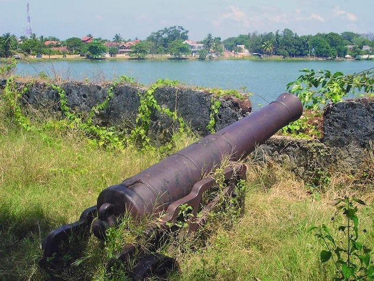
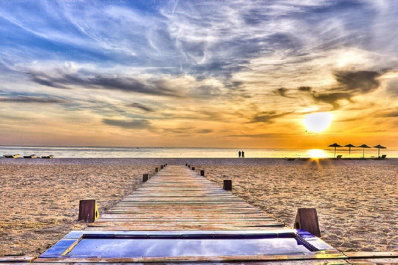

Located in the eastern coast of the island, the city of Batticaloa is one of the more multicultural cities in the island that also showcase the colonial heritage of the country. From the Portuguese to British, and to the many places of worship and amazing beaches, Batticaloa is an idyllic beach getaway that possesses many attractions.Take a stroll around one of the more picturesque cities of the island in the east coast, and witness exemplary beaches, heritage monuments and multicultural wonder.
Batticaloa Fort
Originally a Portuguese settlement, the Fort of Batticaloa was first constructed in 1628 as a trading and administrative center. Set upon a small island, the fort protrudes into a swampy lagoon, surveying the brackish waters protected by the city’s outer banks. The Dutch had arrived in 1602, drawn to the prospects of trade and the abundance of pepper and cinnamon grown by the local community. However, it was not until King Rajasinghe in Kandy urged Dutch intervention that the European colonial power took action, capturing the fort in 1638 and establishing sovereignty in the region. Bordered by a moat on two sides and the lagoon on the others, the stone fort remained in Dutch hands for nearly two centuries before the British entered the country in the late 18th century and took control of the Dutch fortifications.
Kalladi Bridge

The Kallady Bridge that connects the suburb of Kallady to the main city of Batticaloa, is a unique bridge that is shrouded in history and legend. Built in 1924, the bridge was officially called the Lady Manning Bridge in memory of the wife of William Manning, who was the Governor of Ceylon at the time, and was the longest iron bridge in Sri Lanka. The bridge was a major route for almost a hundred years in which an average of 10,000 vehicles would cross the narrow bridge daily. As a result, this bridge also became the island’s oldest iron bridge in operation. However, in 2013 the local authorities decided to make a newer and wider bridge that can accommodate more vehicles, thus leading the old bridge to be used by pedestrians and cyclists.
Kalkudah and Pasikudah
Both the golden Kalkudah and Pasikuda beaches might be impressive but they certainly have their differences. Quite contrasting in fact. It’s important to remember that both these beaches had been left behind in Sri Lanka’s fast growing tourism industry. Not only was the area affected by the recent civil war, it was also destroyed by the 2004 tsunami. There is today still dozens of empty houses and land left to ruin. On top of that, it’s on the other side of the island to the capital and it’s international airport.